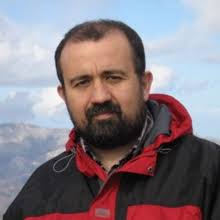
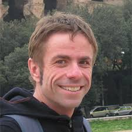

La reunión
Esta reunión se concibe como un espacio de encuentro, reflexión y debate sobre la modelización forestal que se realiza actualmente en España, su papel como herramienta para hacer frente a los retos que plantea el cambio global, y los desafíos a los que se enfrenta como disciplina.
El cambio global supone un reto sin precedentes para la conservación y gestión de los bosques, afectando tanto a su funcionamiento como a la provisión y demanda de bienes y servicios, lo cual obligará a cambiar el modo en el que los gestionamos. Teniendo en cuenta las incertidumbres asociadas a las predicciones futuras y la longevidad de las especies forestales, la modelización supone una herramienta cada vez más necesaria y demandada, que puede resultar útil tanto para los investigadores como para los gestores. Al mismo tiempo, los avances tecnológicos proporcionan una disponibilidad cada vez mayor de datos, sobre todo procedentes de fuentes de datos remotas (LiDAR, satélite, etc.). En un contexto en el que la disponibilidad de datos es cada vez menos limitante, se hace necesario el uso de herramientas que permitan procesar dichos datos de manera adecuada, de forma que nos permitan extraer conclusiones útiles para la ciencia y práctica forestal.
Por ello, el título de la reunión es “Modelización forestal en la era de la información: retos y soluciones ante un futuro incierto”. La reunión pretende ser un marco de difusión de trabajos relacionados con la modelización forestal a múltiples escalas de trabajo, así como un foro de debate sobre los desafíos que afronta la conservación y gestión de los bosques, y cómo la modelización puede contribuir a solventarlos. Al mismo tiempo, queremos que sea también un espacio de discusión sobre los principales retos que aborda la modelización de los ecosistemas forestales en un contexto en el que la disponibilidad de datos es cada vez menos limitante. La reunión quiere integrar disciplinas como la modelización del crecimiento y la productividad forestal, la selvicultura y gestión adaptativa, o la cuantificación y valoración económica de servicios ecosistémicos, con aspectos más metodológicos sobre los retos de la modelización como disciplina.
La reunión se estructura en cuatro sesiones temáticas
Sesión I: Modelización de la dinámica forestal y la distribución de especies en un contexto de cambio global
Sesion II: Modelización del crecimiento y la productividad forestal: nuevas técnicas y herramientas
Sesión III: Modelización de procesos ecológicos e interacciones bosque-agua
Sesión IV: Cuantificación, valoración y optimización de servicios ecosistémicos
Programa
Miércoles, 6 de noviembre
| Hora | Actividad | Descripción |
|---|---|---|
| 8h30 | Bienvenida/Recepción de participantes | |
| 9h00 | Inauguración de las jornadas | |
| 9h30 |  Felipe Bravo iuFor-Universidad de Valladolid | Modelización Forestal. Un paseo del rodal al paisaje para tomar decisiones informadas comprendiendo la dinámica forestal |
| Sesion I: Modelización del crecimiento y la productividad forestal: nuevas técnicas y herramientas | ||
| 10h00 | Rafael Alonso föra forest technologies | Análisis masivo de modelos altura-diámetro en España: una aproximación al small data forestal |
| 10h15 | Jessica Esteban Agresta Soc. Coop | Aplicación de random forests y técnicas bootstrap para la estimación del volumen y su incertidumbre |
| 10h30 | Juan A. Molina Universidad de Santiago de Compostela | Obtención de métricas relacionadas con variables dasométricas de altura en masas maduras de Pinus sylvestris a partir de un único escaneo de TLS |
| 10h45 | Eduardo Velázquez iuFor-Universidad de Valladolid | Predicción de la biomasa acumulada y el carbono fijado durante la recuperación de la cubierta vegetal en campos abandonados a partir de imágenes de satélite |
| 11h00 | Pausa Café | |
| 11h30 |  Rafael Calama INIA | ¿Realmente necesitamos herramientas estadísticas tan complejas para construir modelos empíricos de apoyo a la gestión forestal? |
| 12h00 | Marcos Barrio Anta Universidad de Oviedo | Integración de las bases de datos del inventario forestal nacional y de la cobertura PNOA-LiDAR para la estimación del crecimiento y producción forestal en el noroeste de España |
| 12h15 | Iñigo Lizarralde föra forest technologies | MySustainableForest: desarrollo de modelos para la gestión forestal sostenible con datos LiDAR, satélite y de calidad de la madera |
| 12h30 | María Menéndez-Miguélez INIA-CIFOR | Nueva metodología para la estimación de biomasa en funciones alométricas utilizando distintas fuentes de datos |
| 12h45 | Sonia Condés Universidad Politécnica de Madrid | Dinámica de las distribuciones diamétricas en masas mixtas |
| 13h00 | Francisco Rodríguez föra forest technologies | Dendroflexómetro 2.0: App Android para la toma y procesado de datos procedentes de inventario angular |
| 13h05 | Rafael Calama INIA-CIFOR | Metodología para la estimación del crecimiento anual en biomasa en repoblaciones jóvenes |
| 13h10 | Alfonso Jurado Varela Junta de Extremadura | Modelización del crecimiento de las masas de pinar para la actualización de los inventarios LiDAR en Extremadura |
| 13h15 | Fernando Pérez-Rodríguez föra forest technologies | förecast©: la revolución digital llega a tu bosque |
| 13h30 | Comida | |
| Sesion II: Modelización de la dinámica forestal y la distribución de especies en un contexto de cambio global | ||
| 15h00 |
 Nuria Aquilué
UQAM-CTFC
Nuria Aquilué
UQAM-CTFC
|
Modelizando el futuro de los paisajes forestales Mediterráneos: El reto de la integración |
| 15h30 | Raúl García-Valdés CREAF | Combining niche and process-based models to project climate change impacts on forest productivity |
| 15h45 | Iris P. Monfort-Bagué | Tree regeneration after wind disturbance in a temperate mixed forest |
| 16h00 | Javier de Dios García | Crecimiento y dinámica en masas mixtas de Pinus pinea. Nuevas aproximaciones ante el cambio global |
| 16h05 | Greta Carrete-Vega Vizzuality | Global Forest Climate Service: Datos globales y modelos de distribución de especies para el sector forestal en el contexto de la crisis climática |
| 16h10 | Pere J. Gelabert Universitat de Lleida | Caracterización de la diversidad estructural forestal en paisajes mediterráneos afectados por incendios usando datos de LiDAR aerotransportado |
| 16h15 | Quim Canelles CTFC | ¿Por qué modelizar las interacciones entre plagas de insectos y otras perturbaciones forestales? |
| 16h20 | Pausa café | |
| 16h45 | María Suárez-Muñoz Universidad de Granada | Simulación de la dinámica poblacional de la procesionaria del pino mediante la modelización basada en agentes |
| 17h00 | Santiago Sabaté CREAF | How do we train simulation models from observations? A Bayesian inversion approach |
| 17h15 | Adrián Jiménez-Ruano Universidad de Zaragoza | Delimitación y caracterización de piro-regiones en la España peninsular |
| 17h30 | Marta Pardos INIA-CIFOR | Dinámica de la regeneración natural en masas mixtas de Pinus pinea-Quercus ilex - Quercus faginea-Juniperus thurifera en la meseta norte: aproximación mediante un modelo de celda |
| 18h30 | Visita Guiada al Casco histórico | |
| 21h15 | Cena del congreso Restaurante Crisami | |
Jueves, 7 de noviembre
| Hora | Actividad | Descripción |
|---|---|---|
| Sesion III: Cuantificación, valoración y optimización de servicios ecosistémicos | ||
| 9h15 |
 Elsa Varela
CREDA-UPC-IRTA
Elsa Varela
CREDA-UPC-IRTA
|
Valoración económica de servicios ecosistémicos: aplicación, resultados y limitaciones en el contexto forestal Mediterráneo |
| 9h45 | Eduardo Collado CTFC | Modelización de las relaciones entre la productividad de las setas, el crecimiento de los árboles y el clima en diferentes biomas forestales europeos |
| 10h00 | Valentino Marini Govigli EFIMED | Environmental accounting for forestry from earth observation data, insights from Navarra region, Spain |
| 10h15 | David Candel-Pérez Universidad Pública de Navarra | Calculadora de sostenibilidad (First-Heat Navarra): generando energía sostenible al reducir el riesgo de incendios forestales en comunidades rurales |
| 10h30 | Alba Márquez BC3 - Basque Centre for Climate Change | Nuevo enfoque en el estudio de los servicios ecosistémicos forestales en el contexto del proyecto ALICE INTERREG Atlantic Area |
| 10h45 | Aitor Ameztegui Universitat de Lleida | Provisión de servicios ecosistémicos del bosque mediterráneo bajo distintos escenarios climáticos y de gestión |
| 11h00 | Pausa-café | |
| 11h30 | Marcos Rodrigues Universitat de Lleida | Predicting risk and economic losses from wildfire in eucalypt plantations hotspot of Western Brazil |
| 11h45 | Elena Górriz EFIMED | Simulación de la introducción de un pago por recolección de setas en tres zonas piloto de Cataluña |
| 12h00 | Albert Morera Universitat de Lleida | Comparativa entre distintas técnicas de modelización estadística y aprendizaje automático supervisado para predecir la producción anual de setas |
| 12h15 | Andrés Bravo-Oviedo CSIC | Estudio del potencial mitigador y productivo de las masas de Pinus pinea y Pinus pinaster de la meseta norte castellana mediante el uso del modelo 3-PG |
| 12h30 | Eduardo Collado CTFC | Análisis del efecto de distintas intensidades de clara sobre la biomasa de los hongos |
| 12h35 | Valentino Marini Govigli EFIMED | Modelling a socio-ecological system: a cellular automata model for the spatial development of sacred forests in Epirus |
| 12h40 | Jordi García-Gonzalo CTFC | Herramientas de simulación y optimización de servicios ecosistémicos |
| 12:45 | Taller participativo Francisco Javier Bonet | Mejorando la aplicación de los modelos forestales a problemas reales. Una propuesta de trabajo |
| 13h30 | Comida | |
| Sesion IV: Modelización de procesos ecológicos e interacciones bosque-agua | ||
| 14h45 |
 Miquel de Caceres
CTFC
Miquel de Caceres
CTFC
|
Modelización ecohidrológica en el bosque mediterráneo: escalas, procesos y retos |
| 15h15 | Antonio Molina Universidad Politécnica de Valencia | Efecto hidrológico de la densificación forestal en cuencas efímeras |
| 15h30 | Juan A. Blanco Universidad Pública de Navarra | La selección del modelo climático es más determinante que el nivel de complejidad ecológica al estimar las reservas de carbono en pinares pirenaicos |
| 15h45 | Javier Vázquez Piqué Universidad de Huelva | Trade-off entre crecimiento secundario y producción de piña en pino piñonero: un análisis mediante modelos mixtos bivariantes |
| 16h00 | Josu G. Alday Universitat de Lleida | Dendrosync: un conjunto de herramientas estadísticas para el cálculo de la sincronía espacial entre cronologías de anillos de árboles |
| 16h05 | Irene Adamo Universitat de Lleida | Modelos “random forest” para el análisis de la diversidad fúngica en ecosistemas forestales mediterráneos |
| 16h10 | Juncal Espinosa INIA-CIFOR | Análisis del efecto del tratamiento de quema prescrita en la biomasa de desfronde a través de un enfoque bayesiano |
| 16h15 | Cristina Vega Universitat de Lleida | A data mining approach to local landscape and stand variables related to plant diversity in Mediterranean forests |
| 16h20 | Pausa | |
| 16h40 | Daniel Moreno Fernández INIA-CIFOR | ¿Es posible modelizar la dinámica de la madera muerta? |
| 16h55 | Jordi Voltas Universitat de Lleida | Dinámica reproductiva y potenciales compromisos con el crecimiento radial en pino piñonero |
| 17h10 | Antoine Cabon CTFC | Mechanistic modelling of tree growth responses to temperature and water availability: lessons from monitoring intra-annual cambial activity along a subalpine elevational gradient |
| 17h25 | Clausura | Cierre de la reunión |
Ponentes Invitados
-

Felipe Bravo
Universidad de Valladolid
Catedrático de Universidad, Director del Instituto Universitario de Investigación en Gestión Forestal Sostenible. Presidente de la Sociedad Española de Ciencias Forestales. Su investigación se centra en la selvicultura, la dinámica forestal y la modelización del crecimiento y producción forestal
Título de la ponencia: Modelización Forestal. Un paseo del rodal al paisaje para tomar decisiones informadas comprendiendo la dinámica forestal
-

Nuria Aquilué
UQAM-InForest JRU (CTFC-CREAF)
Investigadora postdoctoral de la Université du Québec à Montreal (Canadá) y del Centre de Ciència i Tecnología Forestal de Catalunya. Su investigación se centra en cuantificar los efectos sobre los ecosistemas forestales de factores de cambio tanto naturales como antrópicos y de las interacciones espacio-temporales entre ellos, usando modelos dinámicos de paisaje aplicados a escalas regionales.
Título de la ponencia: Modelizando el futuro de los paisajes forestales Mediterráneos: El reto de la integración
-

Rafael Calama
Instituto Nacional de Investigaciones Agrarias
Científico Titular en el Departamento de Dinámica y Gestión Forestal del INIA-CIFOR, y profesor invitado de Modelización forestal en la Universidad de Valladolid. Especialista en modelización y gestión forestal. Su principal línea de investigación se centra en la modelización de los diferentes procesos asociados con la dinámica de los bosques Mediterráneos
Título de la ponencia: ¿Realmente necesitamos herramientas estadísticas tan complejas para construir modelos empíricos de apoyo a la gestión forestal?
-

Miquel de Cáceres
Centre de Ciència i Tecnologia Forestal de Catalunya (CTFC)
Investigador del CTFC, responsable del grupo de Modelización de la Vegetación y adjunto a la dirección del Programa de Gestión Multifuncional del CTFC. Su investigación se centra en la modelización de la dinámica vegetal y las relaciones bosque-agua
Título de la ponencia: Modelización ecohidrológica en el bosque mediterráneo: escalas, procesos y retos
-
Elsa Varela
CREDA-UPC-IRTA
Investigadora en el IRTA y asociada a CREDA desde 2015. Su línea de investigación se centra en la valoración económica de servicios ecosistémicos y externalidades ambientales proporcionados por sistemas forestales y agrarios
Título de la ponencia: Valoración económica de servicios ecosistémicos: aplicación, resultados y limitaciones en el contexto forestal Mediterráneo
Comité Organizador
-

Aitor Ameztegui
Universitat de Lleida
Docente e Investigador en la Universitat de Lleida, e investigador asociado al Centre de Ciència i Tecnologia Forestal de Catalunya. Coordinador del grupo de trabajo de Modelización Forestal de la Sociedad Española de Ciencias Forestales. Su investigación se centra en la modelización de la dinámica forestal bajo distintos escenarios climáticos y de gestión. Director y Coordinador del Congreso
-

Andrés Bravo-Oviedo
Museo Nacional de Ciencias Naturales - CSIC
Científico Titular en el Departamento de Biogeografía y Cambio Global del Museo Nacional de Ciencias Naturales (CSIC). Co-coordinador del grupo de trabajo de Modelización Forestal de la Sociedad Española de Ciencias Forestales. Su investigación se engloba en tres ejes: gestión forestal en el contexto de sistemas socio-ecológicos, resiliencia y complejidad de sistemas forestales, y modelización de servicios ecosistémicos
-

Cristina Vega
Universitat de Lleida
Profesora Titular de Universidad del Departamento de Ingeniería Agroforestal de la Universitat de Lleida. Investigadora Asociada al Centre de Ciència i Tecnologia Forestal de Catalunya. Su investigación se centra en la modelización del riesgo de incendios forestales y la planificación forestal a escala del paisaje
-

Antoni Trasobares
Centre de Ciència i Tecnologia Forestal de Catalunya
Director del Centre de Ciència i Tecnologia Forestal de Catalunya, con amplia experiencia investigadora en la modelización del crecimiento de especies forestales.
-

Lluís Coll
Universitat de Lleida
Profesor Agregado del Departamento de Ingeniería Agroforestal de la Universitat de Lleida e Investigador Asociado al Centre de Ciència i Tecnologia Forestal de Catalunya. Su investigación se centra en la comprensión del funcionamiento y dinámica del bosque y su aplicación a la gestión forestal.
-

Assu Planas
Centre de Ciència i Tecnologia Forestal de Catalunya
Responsable de comunicación del Centre de Ciència i Tecnologia Forestal de Catalunya, con amplia experiencia en la organización de congresos y la elaboración de planes de comunicación de eventos similares.
Comité científico
-

Raquel Benavides
Museo Nacional de Ciencias Naturales - CSIC
-

Juan A. Blanco
Universidad Pública de Navarra
-

Antonio del Campo
Universitat Politécnica de València
-

Sonia Condés
Universidad Politécnica de Madrid
-

Olalla Díaz-Yañez
University of Eastern Finland
-

Andrea Duane
Centre de Ciència i Tecnologia Forestal de Catalunya (CTFC)
-

Raúl García-Valdés
Centre de Recerca en Ecologia i Aplicacions Forestals (CREAF)
-

Elena Górriz
EFIMED - CTFC
-

Santiago Martín-Alcón
Agresta S Coop.
-

Sergio de Miguel
Universitat de Lleida
-

Marcos Rodrigues
Universitat de Lleida
-

Jordi Vayreda
Centre de Recerca en Ecologia i Aplicacions Forestals (CREAF)
Sede
La reunión se celebrará en la sede principal del Centre de Ciència i Tecnologia Forestal de Catalunya (CTFC), ubicado en Solsona, provincia de Lleida. Dicha sede, inaugurada en 2008, dispone de todos los equipamientos necesarios para la celebración de un evento de dichas características.


Solsona se encuentra enclavado en un entorno único, rodeado de bosques submediterráneos y en pleno Prepirineo, a 1h15’ de Lleida y 1h30’ de Barcelona. La organización facilitará a los asistentes que lo deseen el transporte a Solsona desde Lleida o Barcelona el día 5 de noviembre, así como el transporte de vuelta a dichas ciudades tras la finalización de la reunión.Se ofrecerá más información al respecto en sucesivas circulares
Inscripción y envío de resúmenes
Fechas a tener en cuenta
* Envío de resúmenes: NOVEDAD: ¡plazo ampliado hasta el 20 de septiembre!
* Aceptación de resúmenes y comunicación formato: 1 de octubre
* Inscripción y pago de la cuota: hasta el 11 de octubre
Envio de resúmenes
Puedes enviar un resumen de tu trabajo por correo a modelossecf@gmail.com hasta el próximo 20 de septiembre. El formato de los resúmenes debe ajustarse a la plantilla del congreso, que puedes descargar aquí. Los resúmenes recibidos serán evaluados por el comité científico, que los asignara a una de las cuatro sesiones temáticas y recomendará el formato de la presentación:
* Comunicación oral normal: de 10-12 minutos
* Comunicación flash: de entre 3 y 5 minutos
* Salvo que se reciban numerosas comunicaciones, no se contempla sesión de posters.
Inscripción
Para formalizar la inscripción es necesario abonar la cuota mediante transferencia bancaria a la cuenta de la Sociedad Española de Ciencias Forestales (IBAN: ES10 1491 0001 2321 1589 9821, TRIODOS BANK), antes del día 11 de octubre, indicando el concepto: “RGTModelos19” y el nombre de la persona inscrita. Posteriormente, se debe enviar una copia del justificante de transferencia, junto con el boletín de inscripción debidamente cumplimentado, a las siguientes direcciones de correo electrónico (A AMBAS):
La inscripción incluye documentación, cafés y comidas durante las jornadas, así como transporte desde Lleida o Barcelona para aquellos que precisen de este servicio. La cuota de inscripción será de:
- 120 euros para las/os socias/os de la SECF o miembros de la Universitat de Lleida
- 140 euros para no socias/os
- 80 euros para estudiantes o desempleados/as que acrediten su condición
Además, la SECF pone a disposición de estudiantes vinculados a la misma, bien como socios individuales o porque su Universidad o Centro de Investigación sea socio institucional de la SECF, bolsas de viaje por un importe máximo de 50 euros en gastos de transporte debidamente documentados. Dichas bolsas de viaje deben solicitarse a título individual mediante este formulario.
Publicación voluntaria de textos completos
Por parte de la SECF se prevé la publicación, para aquellos autores que lo deseen, de las comunicaciones presentadas en los Cuadernos de la SECF, previa revisión por el comité científico, en formato electrónico y de libre acceso. Para la publicación en los Cuadernos de la SECF de las comunicaciones voluntarias aceptadas, se deberán seguir las normas de publicación, indicadas en la página web
Documentación
Primera circular
Segunda circular
Formulario de inscripción
Plantilla de resúmenes
Solicitud de bolsa de viaje (para estudiantes)